aircraft construction lessons
Generated from package READMEs. Inspiration, held, diagnostic and retired sources require explicit knowledge search scopes.
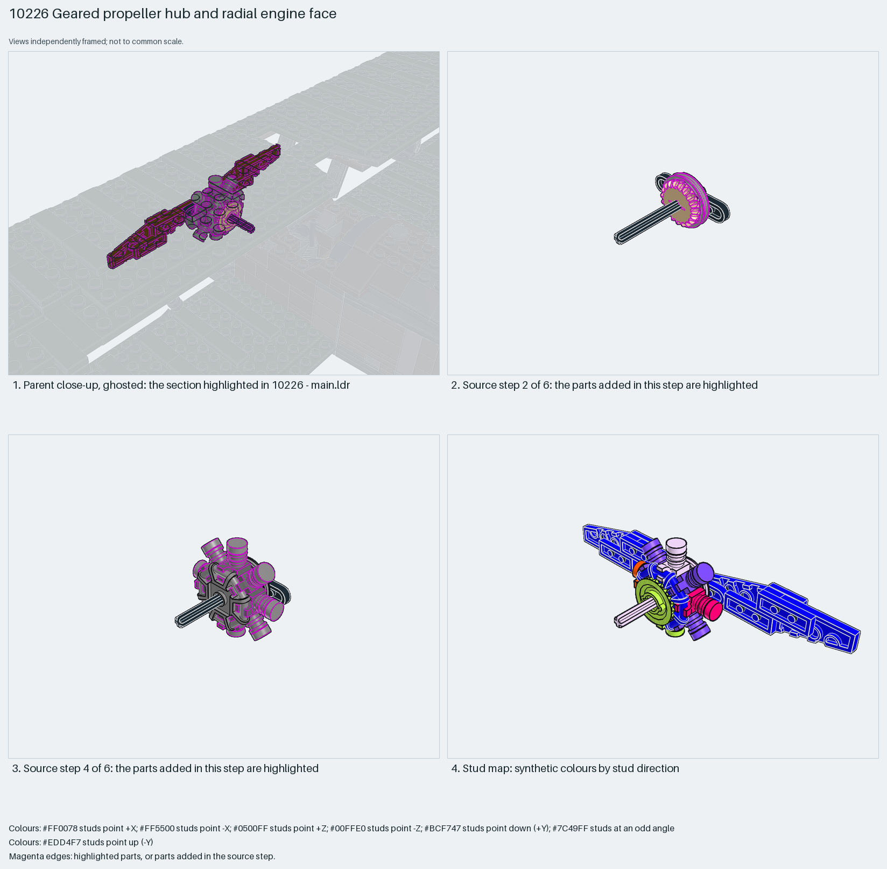
A radial engine face and propeller on one 6-long axle: eight cylinders, each a clip plate holding a round tile and round plate, clip onto a 2×2 octagonal rod frame; bevel gears and a belt wheel on the axle let the parent's drive spin it; the propeller is a 2-blade Technic rotor with two 2×4 wedge plates per blade for the wooden-prop profile. Use it for any radial-engined propeller plane: the clip-and-round-tile cylinder is one part trio repeated around an octagonal frame, and the rotor's four studs take wedge plates to shape blades. Keep the engine face one plate ahead of the cowling.
Gear meshing with the fuselage drive and the blade plates' clutch on the rotor studs were not checked. The source and renders teach a construction. They do not prove clutch, fit, clearance, travel or stability. Boards are rendered from synthetic inspection copies, and poses are rigid re-placements.
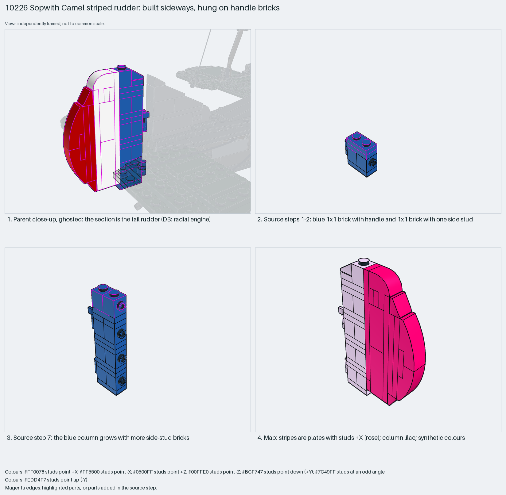
Striped vertical tail rudder and handle-bearing column are visible in actual parent. No radial engine. Rename semantic package; retain source coordinate and hinge limits.
Static visual evidence only unless the linked package records specific further checks. Search eligibility does not certify fit, motion or strength.
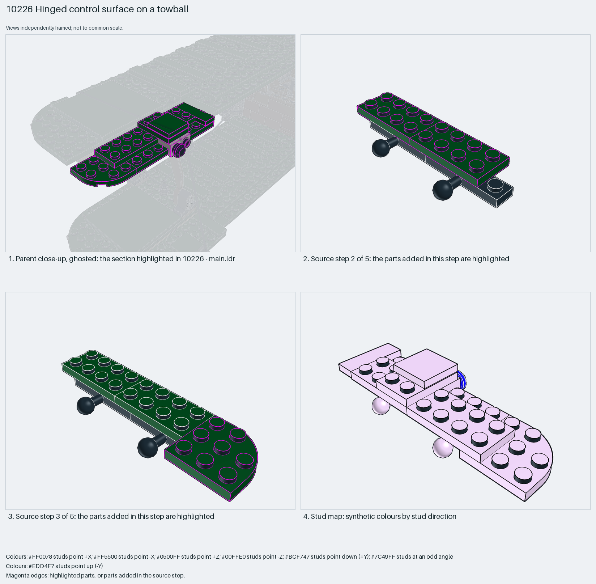
An aileron as a two-plate-thick strip with a rounded tip: two 1×4 towball plates along its leading edge snap into the wing's ball sockets and form the hinge; a down bracket and tiles finish the root. Use it for ailerons, elevators or flaps: a plate strip, towball plates on the hinge edge, sockets on the wing. The socket spacing on the wing fixes the towball spacing here.
Hinge travel and socket clutch were not checked; the socket side belongs to the wing package. The source and renders teach a construction. They do not prove clutch, fit, clearance, travel or stability. Boards are rendered from synthetic inspection copies, and poses are rigid re-placements.
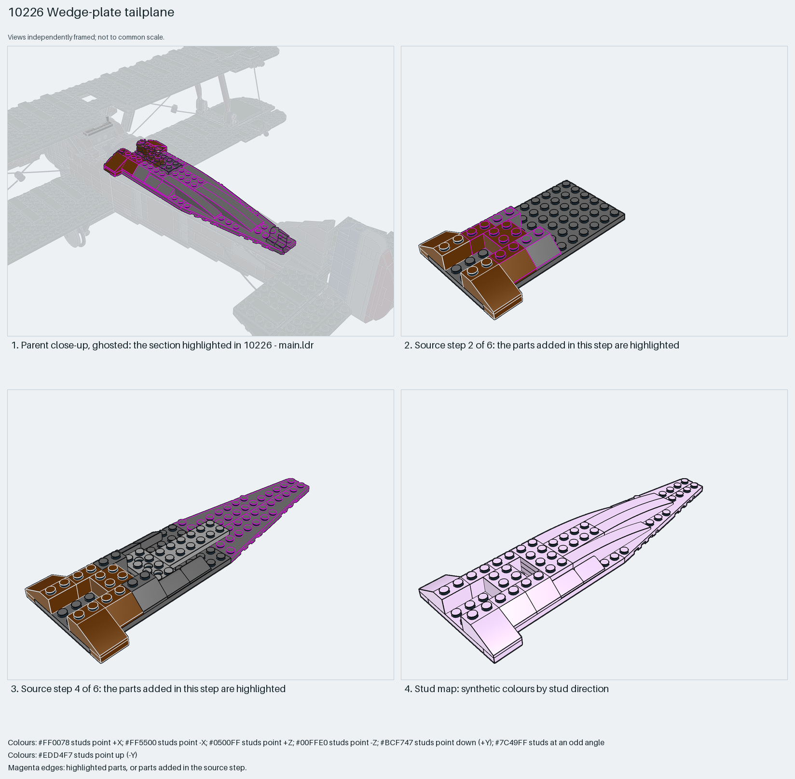
A tapered tailplane from a 6×12 plate core, two 3×12 wing plates as the swept halves, four 1×8 curved slopes as rounded tips and 33°/45° slopes at the leading edge; built with its span along X and turned 90° by the parent. Use it for any tapered stabiliser: a plate core, 3×12 wing plates for the taper, curved slopes for the tips. Build it in its own frame and let the parent place it; add the elevator with towball plates like the aileron package.
The elevator hinge and the rigging attachment were not checked. The source and renders teach a construction. They do not prove clutch, fit, clearance, travel or stability. Boards are rendered from synthetic inspection copies, and poses are rigid re-placements.
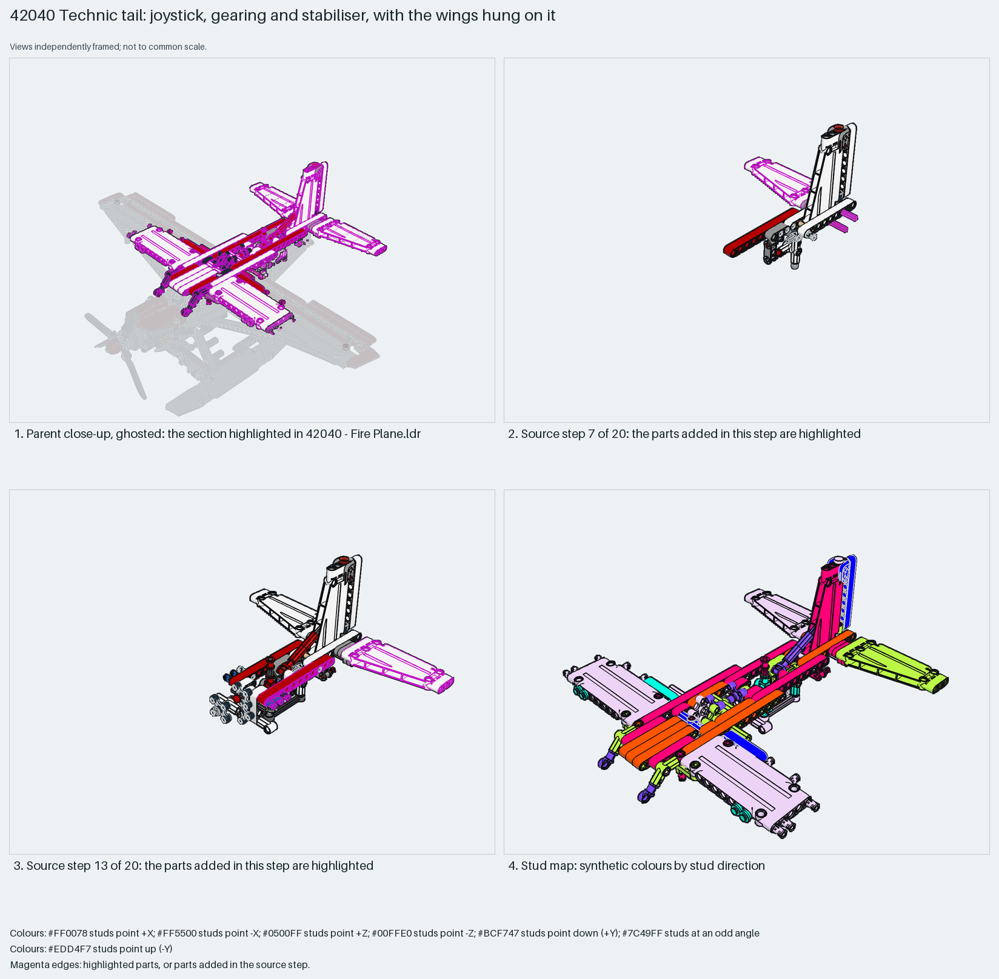
How a studless plane hangs everything behind the cockpit off three parallel 9-long spar beams: a tall liftarm fin, a tilting stabiliser driven by knob gears from a cockpit joystick, trapezium-panel wings pinned to the spars, and panel tail sides. Use it to learn two things: keep the spar beams continuous and hang wings and tail off them, and route a cockpit lever to a tail surface through knob gears on cross axles. Check the stabiliser's travel before closing the tail sides.
The joystick-to-stabiliser travel and the pin retention of the wings were not checked; one static pose. `./ldraw-agent build` of the exported plan reports `technic.invalid_seating` for 18 source interfaces (32556 long pins and 2780/6558 friction pins only partly seated in the 11-, 7- and 5-long beams as drawn); `manual export`, the plan rebuild and the BOM comparison pass. The source and renders teach a construction. They do not prove clutch, fit, clearance, travel or stability. Boards are rendered from synthetic inspection copies, and poses are rigid re-placements.
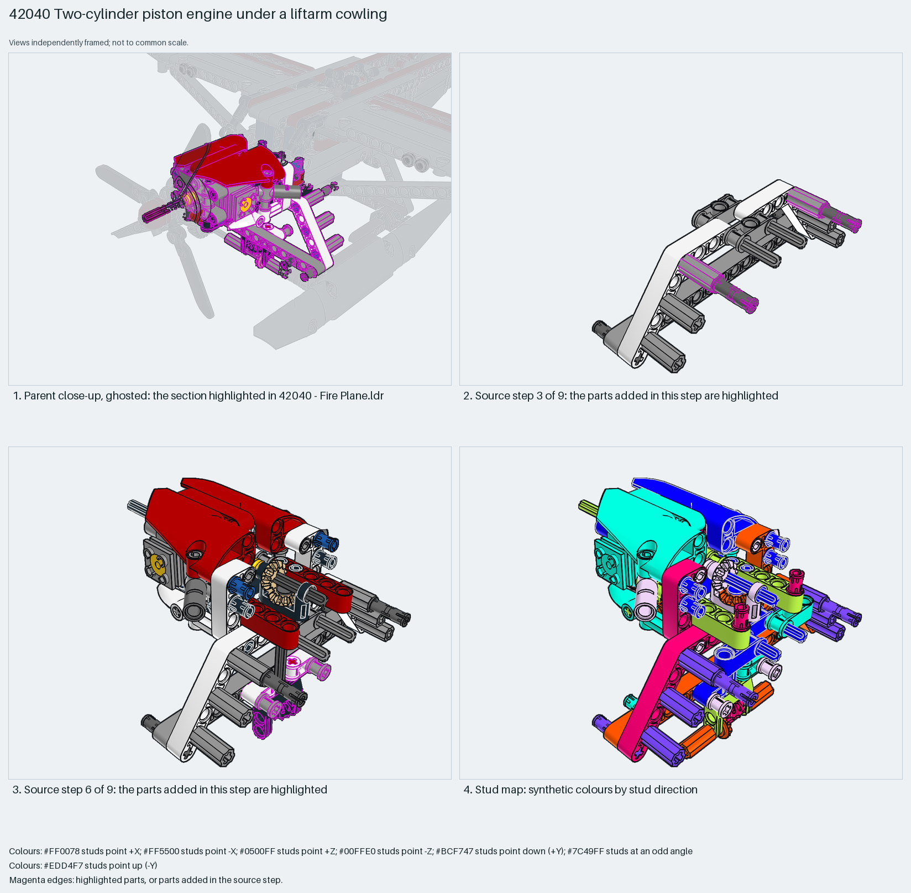
A two-cylinder engine for a Technic propeller plane: two pistons on connecting rods and a crank between cross blocks, driven through a bevel-gear pair from the propeller axle, in a white bent-liftarm cradle with eight axle joiners as exhaust stubs and a red beam-and-panel cowling on top. Use it for a visible piston engine in any Technic prop plane: build cradle, crank and pistons first, then the covers and hood; mesh the bevel pair with the propeller axle and check piston travel before closing the cowling.
Piston travel, the bevel mesh with the propeller axle and hood clearance were not checked. The source and renders teach a construction. They do not prove clutch, fit, clearance, travel or stability. Boards are rendered from synthetic inspection copies, and poses are rigid re-placements.
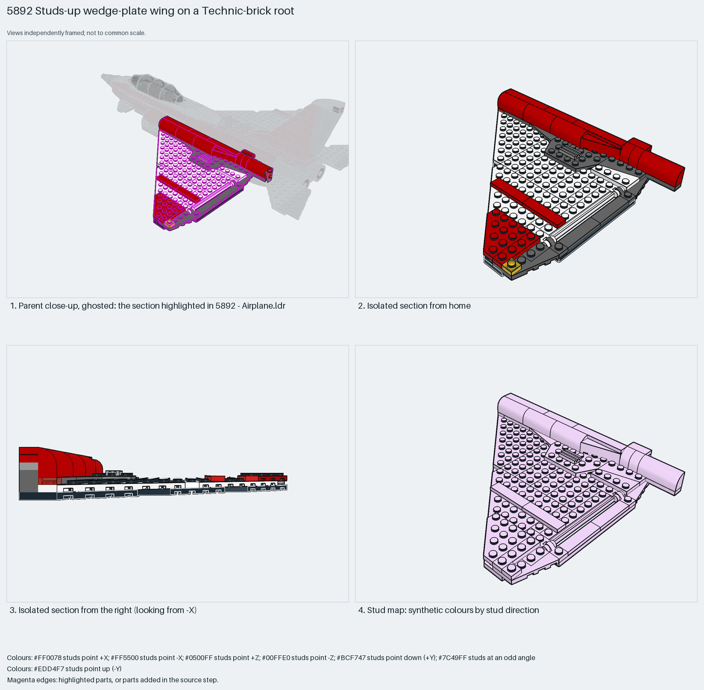
A studs-up delta wing from corner-cut plates (8×8, 6×6, 4×6 and 4×4 without corners) overlapped two deep, tiles along the trailing edge, red curved-top bricks as the leading-edge fairing, and two 1×2 Technic bricks with handle and clip plates at the root as the fuselage interface. Use it for any swept plate wing: overlap corner-cut plates so every seam is bridged by the layer above, tile the trailing edge, fair the leading edge with curved bricks and give the root a Technic-brick spar for pins.
Root pin engagement and the clip plates' hold were not checked. The source and renders teach a construction. They do not prove clutch, fit, clearance, travel or stability. Boards are rendered from synthetic inspection copies, and poses are rigid re-placements.
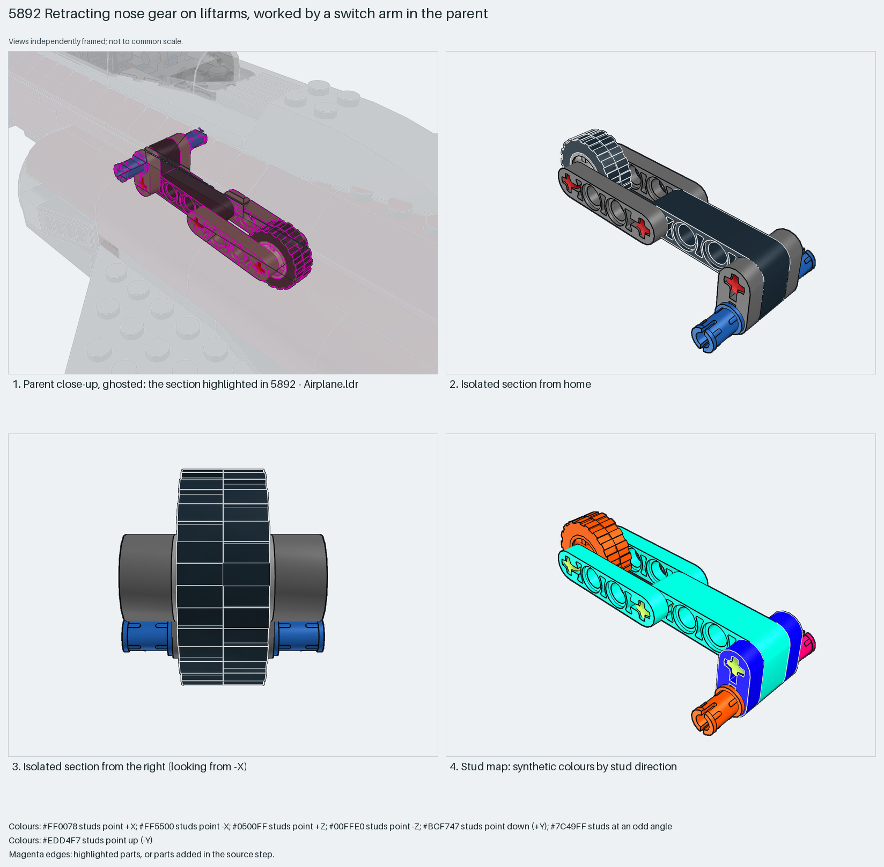
A nose leg that can swing: one bent 2×4 liftarm carries the wheel on a 2-long axle at its tip, two thin 4×0.5 liftarms and two 2×0.5 liftarms form a parallel link, and axle pins at the top are the pivot the parent holds. Use it for any nose or tail wheel that must fold: keep the pivot pins on the frame, the parallel link to a lever, and check the wheel's swept path through the fuselage opening. Draw both poses before claiming retraction.
Retraction travel, the switch-arm linkage and the wheel's clearance through the nose were not checked; one pose only. The source and renders teach a construction. They do not prove clutch, fit, clearance, travel or stability. Boards are rendered from synthetic inspection copies, and poses are rigid re-placements.
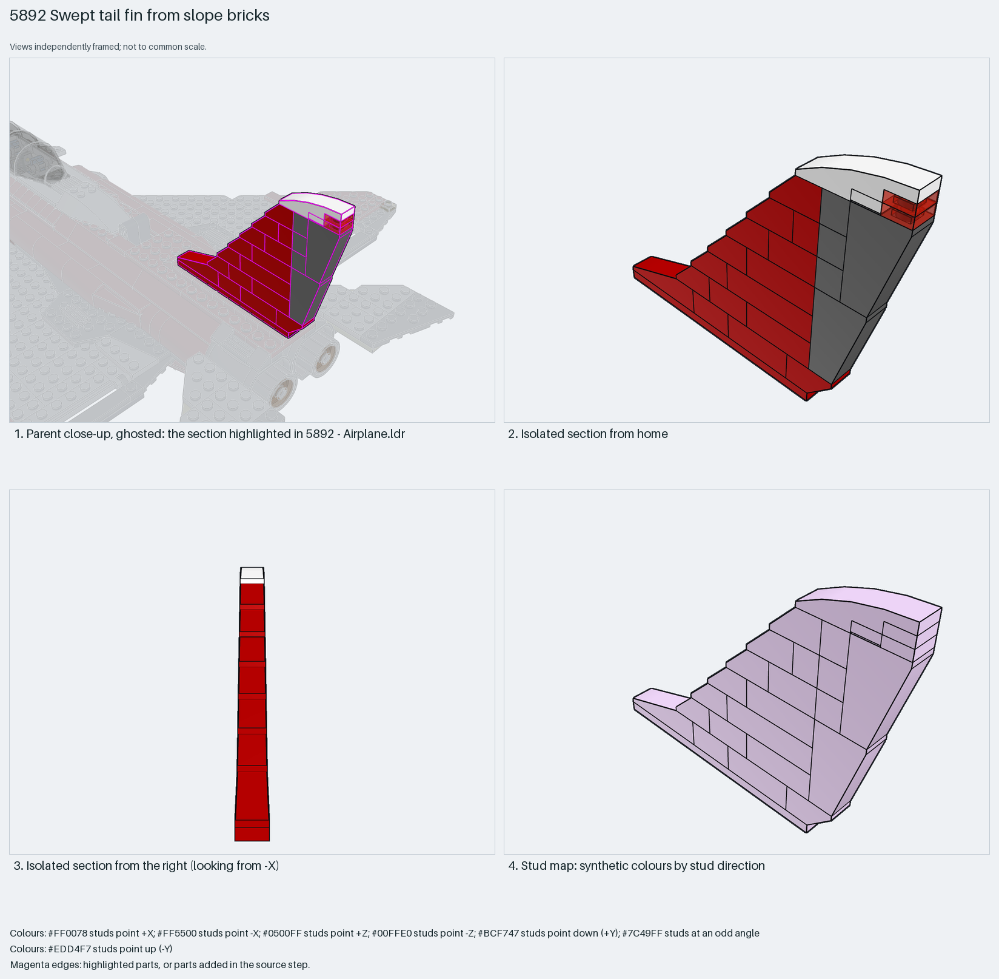
A one-stud-thick swept fin: a brick stack whose leading edge steps back one 2×1 45° slope per course, a dark grey rudder strip of inverted 75° slopes at the trailing edge, a shallow 18° slope as the root fillet and a 4×1 curved slope as the tip cap, all on a 1×10 plate. Use it for any single fin: keep the stack one stud thick, step the leading edge with 45° slopes and the trailing edge with inverted 75° slopes, and change the courses to change the sweep. A two-stud fin needs 2×2 slopes instead.
Sideways strength of the one-stud stack was not checked. The source and renders teach a construction. They do not prove clutch, fit, clearance, travel or stability. Boards are rendered from synthetic inspection copies, and poses are rigid re-placements.
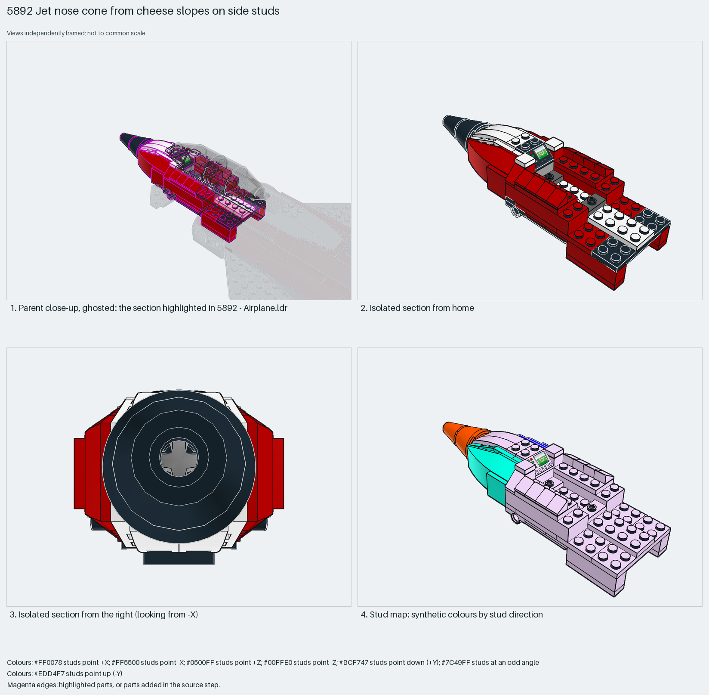
A jet nose that tapers in two directions: the top with 4×1 curved slopes and 1×1 cheese slopes, the sides with 6×4 triple-curved wedges hung sideways on 1×4 side-stud bricks and jumper plates, and a 3×3 cone plus a 2×2 cone on a 5-long axle as the spike. Use the pattern for any pointed nose: build a studs-up core one stud narrower than the fuselage, hang the curved side panels on side studs, and let a cone pair on an axle make the tip. Change the wedge part to change the curvature.
Clutch of the wedges on the side studs and the cone pair's fit on the axle were not checked. The source and renders teach a construction. They do not prove clutch, fit, clearance, travel or stability. Boards are rendered from synthetic inspection copies, and poses are rigid re-placements.

A Creator jet: a Technic-brick spine with pins carries a studs-up System skin, delta plate wings with Technic-brick roots, a SNOT nose with a cone spike, a one-stud slope fin, twin 43121 engines side by side at the tail and a retracting nose gear. Measured: span 41 studs, length 50, height 17, 524 parts, 16% Technic. Use it as the template for a mid-size jet: length 1.2× span, delta wings two plates thick, engines at the rear, fin one stud thick. Build the Technic spine first, then hang wings, nose and fin on it before closing the skin.
Wing root pin engagement, gear retraction and canopy fit were not checked. The source and renders teach a construction. They do not prove clutch, fit, clearance, travel or stability. Boards are rendered from synthetic inspection copies, and poses are rigid re-placements.
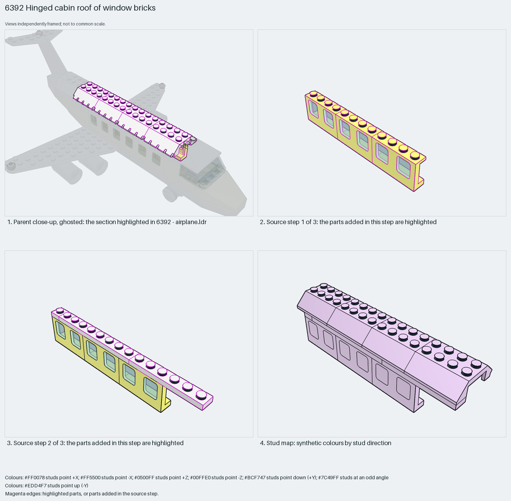
The openable roof of the classic City airliner: four 4×4 double-slope bricks with a hinge edge sit on one wall of window bricks; the opposite wall in the parent carries the matching hinge, so the whole roof lifts to load minifigures. Use it when a cabin must open without removing the roof: one wall carries the roof bricks, the other the hinge, and the cabin width is fixed by the 4×4 double slopes (four studs across). Window bricks give the row of cabin windows for free.
Hinge mating and the roof's opening clearance were not checked. The source and renders teach a construction. They do not prove clutch, fit, clearance, travel or stability. Boards are rendered from synthetic inspection copies, and poses are rigid re-placements.

A minifigure airliner from large moulded sections: the 54092 glazed nose, 54091 cabin sections and the 54701 tail cone pinned end to end with 2780 friction pins, one 54093 wing part each side carrying two nacelles, a two-axle bogie under each wing root and the flight deck dropped into the nose. Measured: span 70 studs, length 64, height 23, 358 parts, 12% Technic. Use it when large moulded airliner parts are acceptable: set the cabin length by the number of 54091 sections, keep span about 1.1× length, hang engines from the wing anti-studs and bogies from wing-root pin holes. For a brick-built airliner take the module layout, not the parts.
Section pin clutch, door hinges and gear stance were not checked; a static pose. The source places the two bogies 20 LDU off-centre from each other. The source and renders teach a construction. They do not prove clutch, fit, clearance, travel or stability. Boards are rendered from synthetic inspection copies, and poses are rigid re-placements.
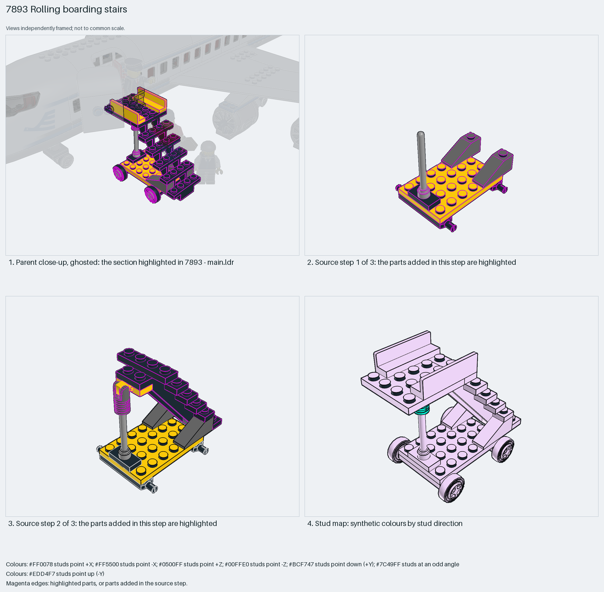
Rolling boarding stairs for a minifigure airliner: a dedicated 7×4×6 open staircase part on a 4×6 plate with wheel-pin plates and four small wheels, a 4×4 landing plate with two 1×4 panels as rails and an antenna as the handrail post. Use it as ground equipment beside any minifigure airliner door; set the landing height to the door sill before choosing the base plates.
Landing height against the door sill and rolling clearance were not checked. The source and renders teach a construction. They do not prove clutch, fit, clearance, travel or stability. Boards are rendered from synthetic inspection copies, and poses are rigid re-placements.
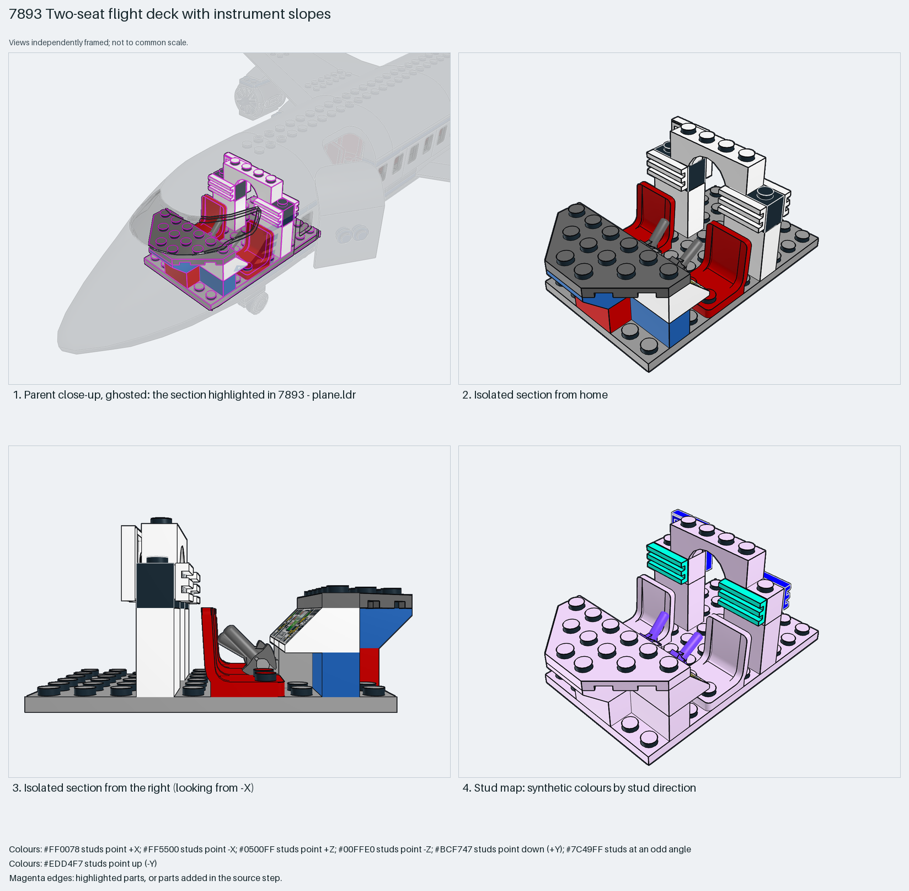
A two-seat flight deck that drops into a moulded nose: two 2×2 seats, two printed instrument slopes, bar control columns, grille tiles on side-stud bricks as side consoles and a 1×4 arch over the centre. Use it for any minifigure flight deck: seats, instruments and consoles on one plate, checked against the glazing height before closing the nose. Minifigure fit was not drawn; add pilots and check knees and headroom.
Minifigure seating, headroom under the glazing and the column's clip were not checked. The source and renders teach a construction. They do not prove clutch, fit, clearance, travel or stability. Boards are rendered from synthetic inspection copies, and poses are rigid re-placements.
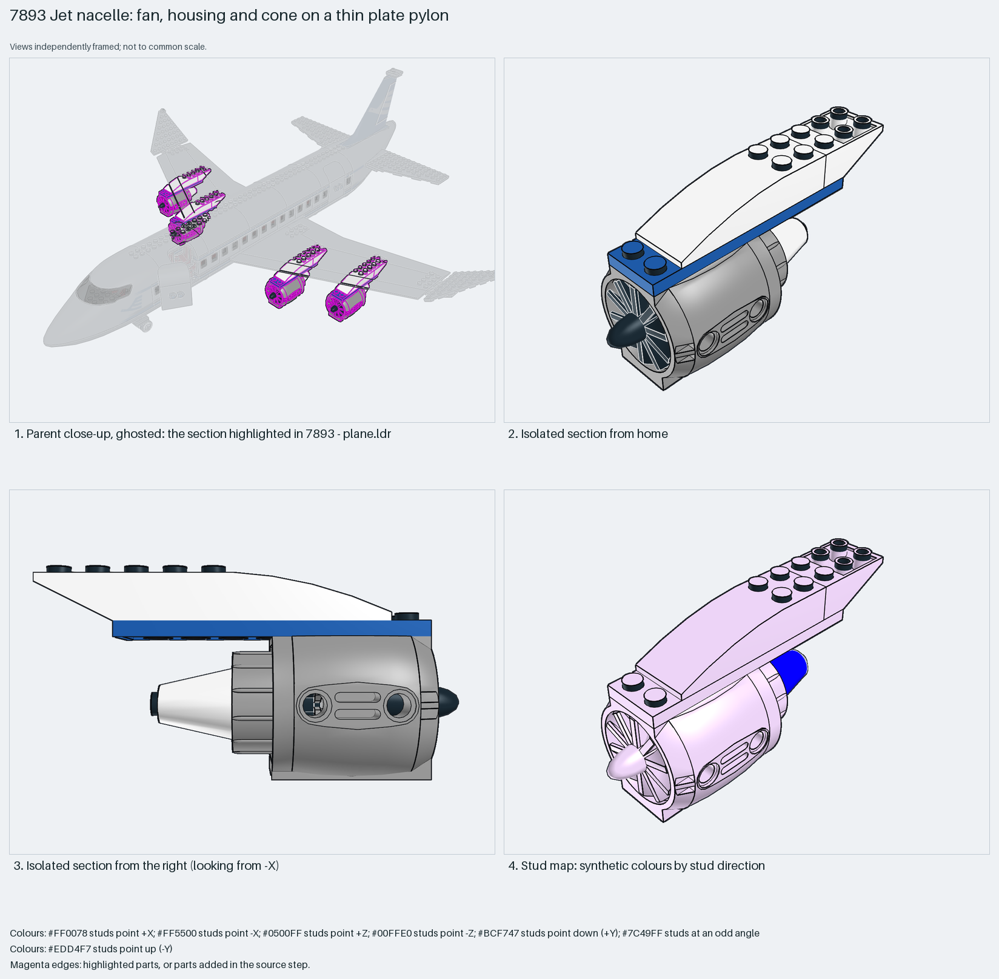
A convincing jet nacelle from three dedicated parts (43121 engine shell, 46667 fan on its own pin, 3942c cone as the exhaust) hung under the wing on a thin pylon: a 2×8 plate with a 6×2 curved slope and an inverted 33° slope as its fairing. Use it for any twin- or four-engine airliner: keep the fan, shell and cone on one axis, mount through the pylon plate only, and space repeated engines along the wing sweep. Swap the pylon fairing slopes to change the pylon profile.
Fan rotation, pylon strength and the exhaust ring's attachment were not checked; part 2566 is an obsolete LDraw identity. The source and renders teach a construction. They do not prove clutch, fit, clearance, travel or stability. Boards are rendered from synthetic inspection copies, and poses are rigid re-placements.
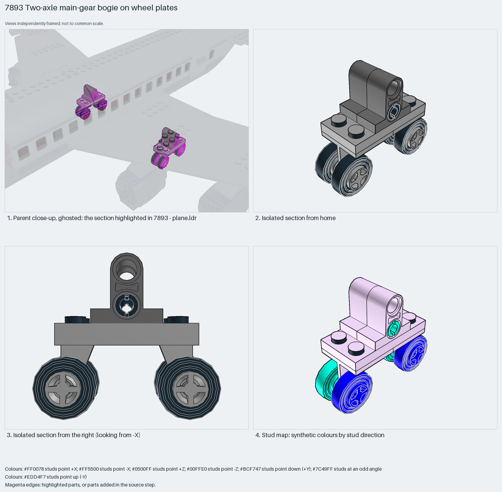
A compact main-gear bogie: two 2×2 wheel-pin plates under a 2×4 plate carry four small wheels; two 1×2 tiles with holes stand on the plate so that one friction pin through them is the whole mounting interface to the fuselage. Use it under any minifigure-scale airliner or cargo plane: one pin hole per bogie in the fuselage or wing is enough, and the standing tiles set the leg height. Mirror the placement, not the part.
Pin clutch, the asymmetric placement and rolling clearance against the fuselage were not checked. The source and renders teach a construction. They do not prove clutch, fit, clearance, travel or stability. Boards are rendered from synthetic inspection copies, and poses are rigid re-placements.
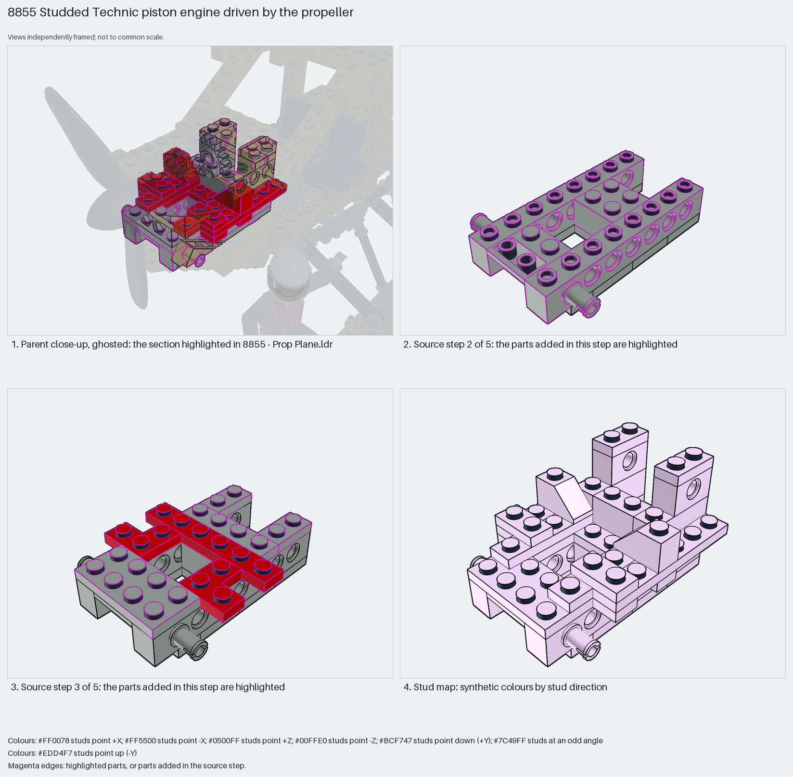
A boxy studded Technic engine block: an H of plates, two 1×8 Technic bricks whose holes carry the propeller axle, red plates and bricks as the crankcase, and 1×3 bricks standing as cylinder banks with 45° slopes as the cowl. Use it as a quick studded engine block for a 1980s-style Technic plane: hole bricks on both sides give the crank bearing, and the block stays one stud narrower than the cowling.
Bearing alignment with the parent's axle was not checked. The source and renders teach a construction. They do not prove clutch, fit, clearance, travel or stability. Boards are rendered from synthetic inspection copies, and poses are rigid re-placements.
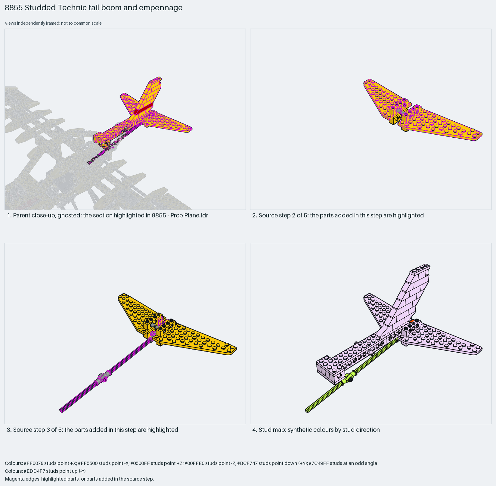
A studded Technic empennage: 7×12 wing plates as the tailplane halves on a short Technic-brick block, a one-stud fin of 45° slopes and jumper plates with a red stripe, and a `Tail body` boom of 1×12 and 1×6 Technic bricks; a long axle with toggle joints runs forward along the boom as the elevator control. Use the 7×12 wing plates as one-part tailplane halves and the jumper-plate stack for a thin swept fin; run control axles along the boom inside the Technic bricks.
Elevator travel and the axle's bearings in the boom were not checked. `./ldraw-agent build` of the exported plan reports `technic.invalid_seating` for one 3673 pin partly seated in a 1×6 Technic brick as drawn; `manual export`, the plan rebuild and the BOM comparison pass. The source and renders teach a construction. They do not prove clutch, fit, clearance, travel or stability. Boards are rendered from synthetic inspection copies, and poses are rigid re-placements.
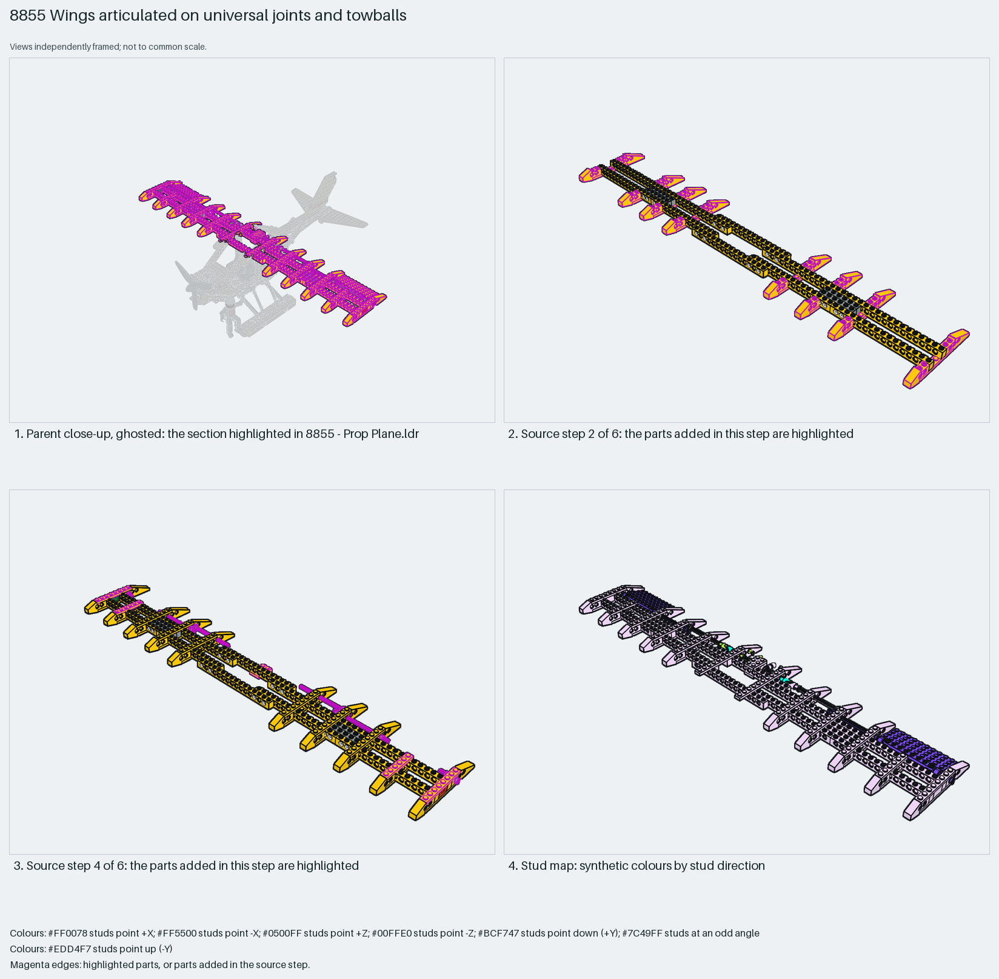
A studded Technic wing: two 1×16 Technic bricks as leading and trailing spars on 10-long axles, 1×4 wing-front and 1×6 wing-back bricks as ribs, 1×8 plates as skin strips; each root is a universal joint with a towball so the wing can be tilted, and the flaps are 4×10 plates on a Technic-plate hinge with toggle joints. Use the spar-and-rib pattern for any studded Technic wing: Technic-brick spars give the span and pin holes, wing bricks give the profile, plates the skin. Drop the universal joints unless the wing must tilt, and hinge flaps on a Technic plate.
Wing tilt travel, flap travel and the universal joints' retention were not checked. `./ldraw-agent build` of the exported plan reports `technic.invalid_seating` for the two 6-long axles passing through the 1×2 hole bricks at the root as drawn; `manual export`, the plan rebuild and the BOM comparison pass. The source and renders teach a construction. They do not prove clutch, fit, clearance, travel or stability. Boards are rendered from synthetic inspection copies, and poses are rigid re-placements.

Wheel-strut geometry in one source pose; retractable is not demonstrated. Preserve parent mounts; no checked travel claim.
Static visual evidence only unless the linked package records specific further checks. Search eligibility does not certify fit, motion or strength.

Octagonal side halves frame a shaped central door spanning the top/front. Study enclosure and pilot envelope; the pilot and helmet are nested context, not separate recommended constructions. Hinge motion and clearance remain unverified.
Static visual evidence only unless the linked package records specific further checks. Search eligibility does not certify fit, motion or strength.
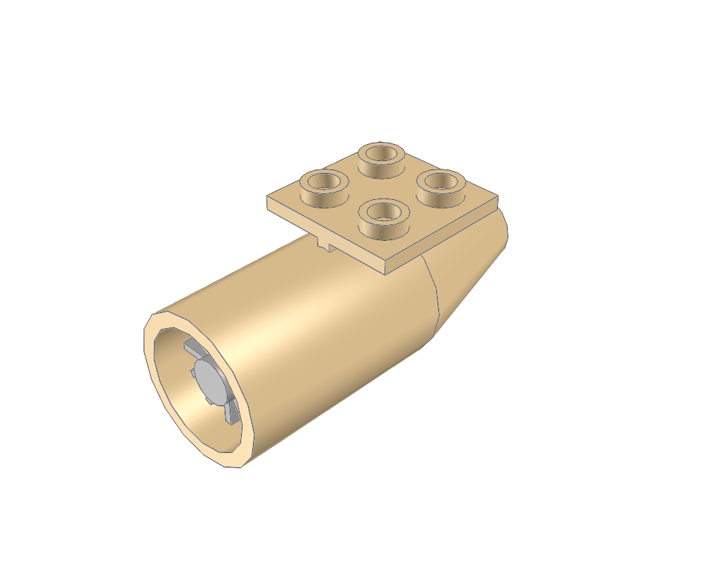
Purpose-made engine housing/internal core fitting, with top stud attachment. Source courier jet supplies underside wing sockets. Preserve intake direction and clearance below wing; this is not a brick-built turbine construction.
Static visual evidence only unless the linked package records specific further checks. Search eligibility does not certify fit, motion or strength.
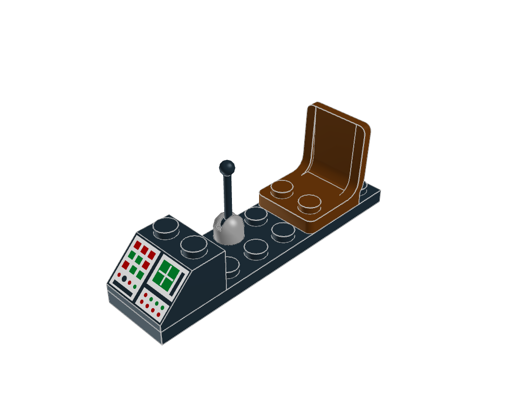
Small seat/control-stick/instrument-slope layout on two-by-eight floor. Stick in one upright pose; cockpit envelope and canopy must be provided by parent.
Static visual evidence only unless the linked package records specific further checks. Search eligibility does not certify fit, motion or strength.